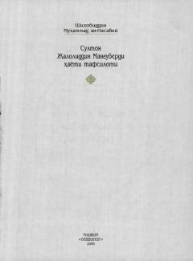

JMSulton Jaloliddin Manguberdining hayoti va qahramonliklariga bag'ishlangan tarixiy asar.
Ushbu kitob buyuk sarkarda va vatandoshimiz Sulton Jaloliddin Manguberdining hayoti, jasorati va ozodlik uchun kurashlari haqida hikoya qiladi. Asar tarixiy manbalar asosida tuzilib, uning taqdiri va faoliyatiga oid batafsil ma'lumotlarni o'z ichiga oladi.